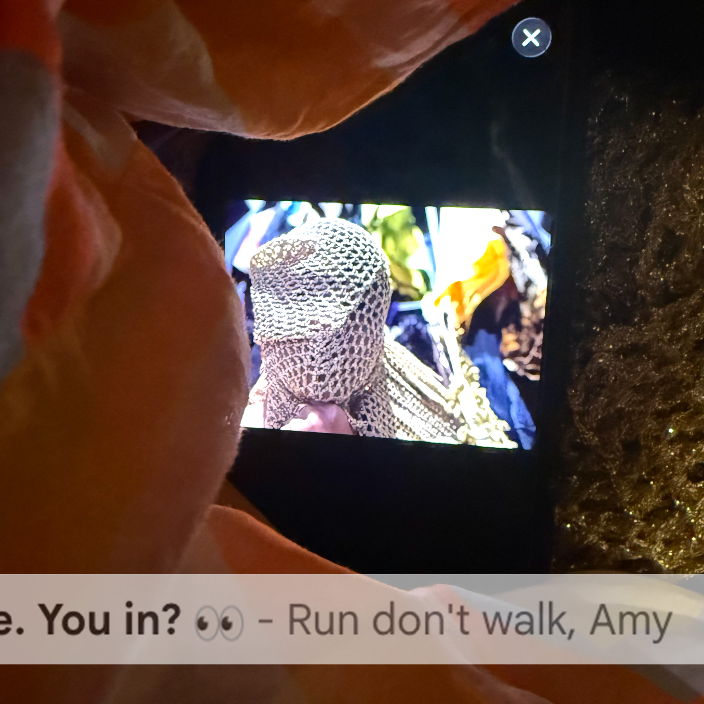
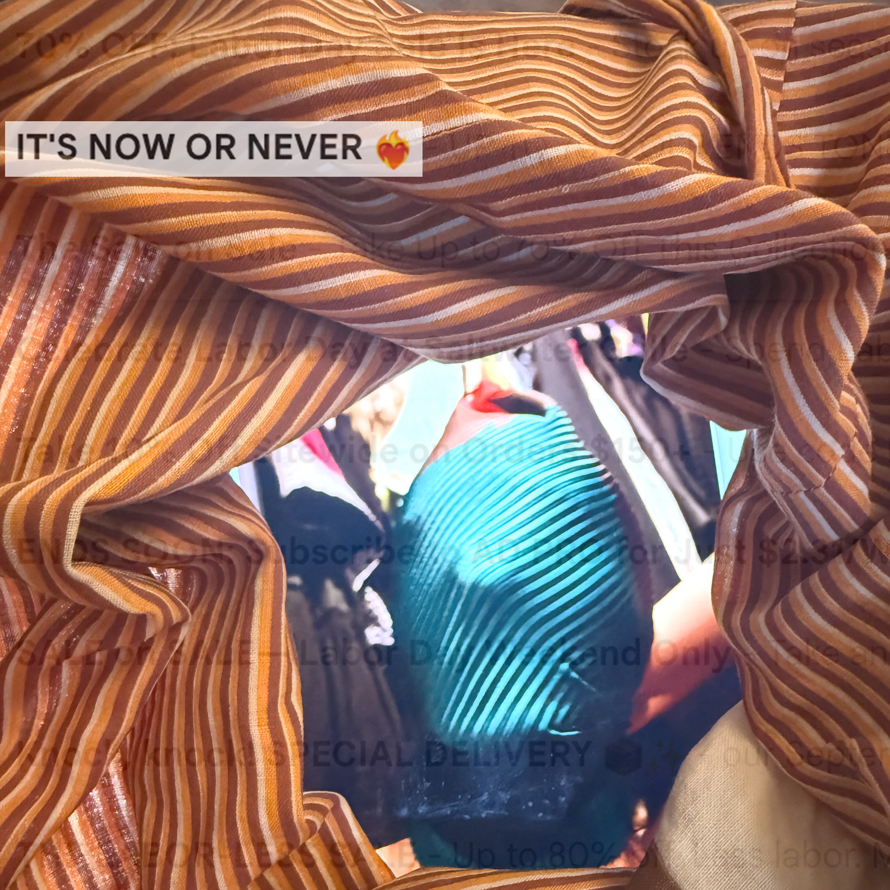
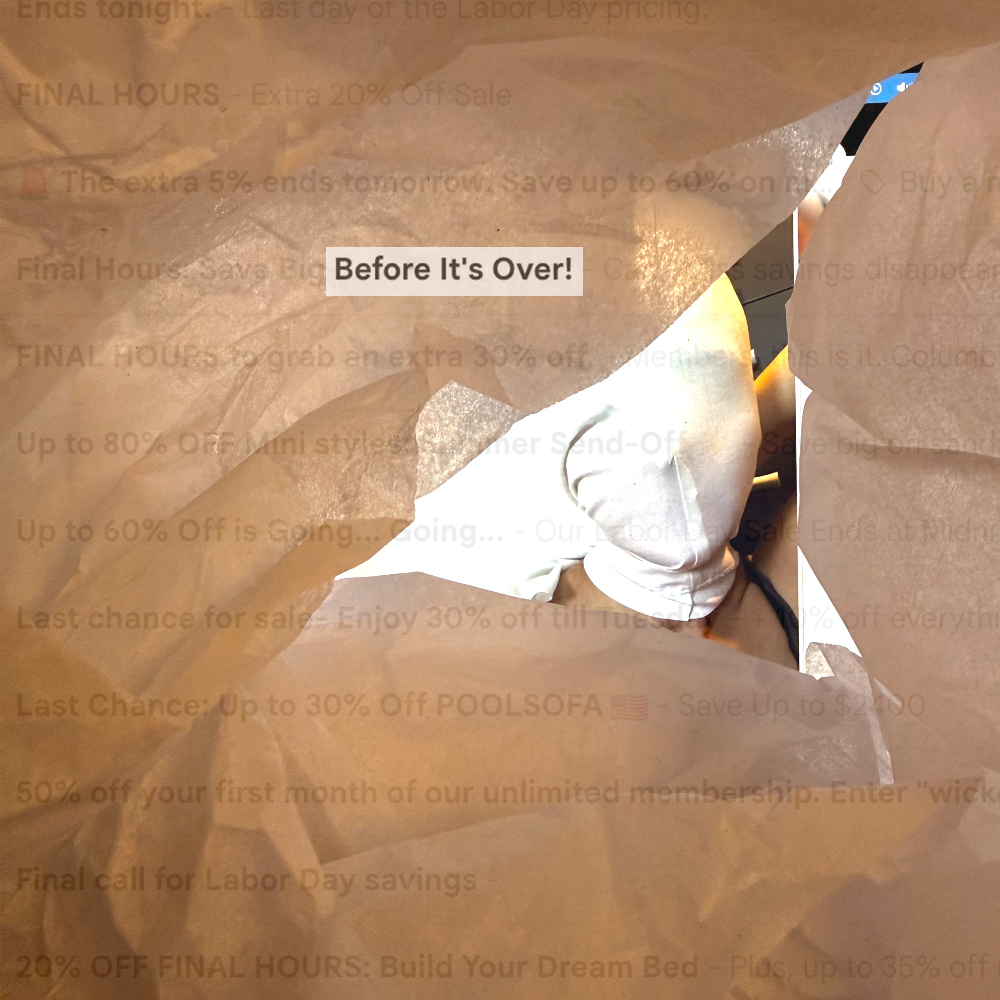
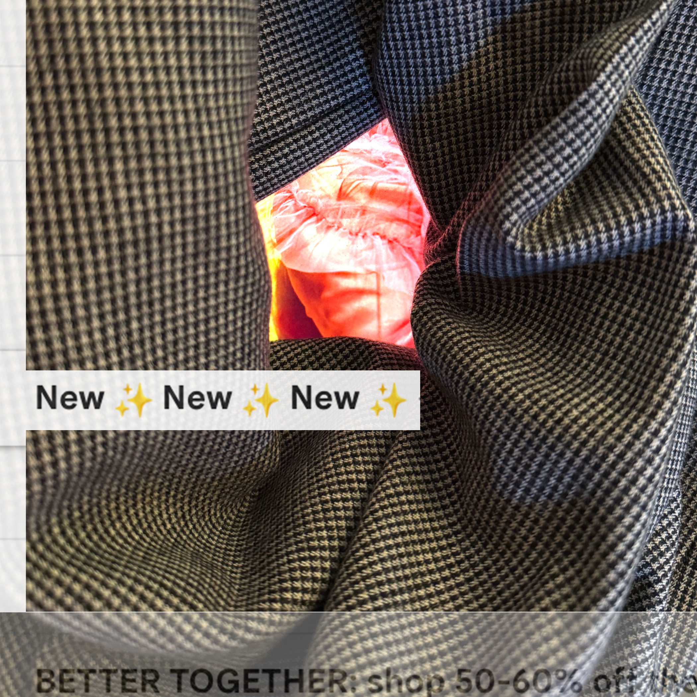
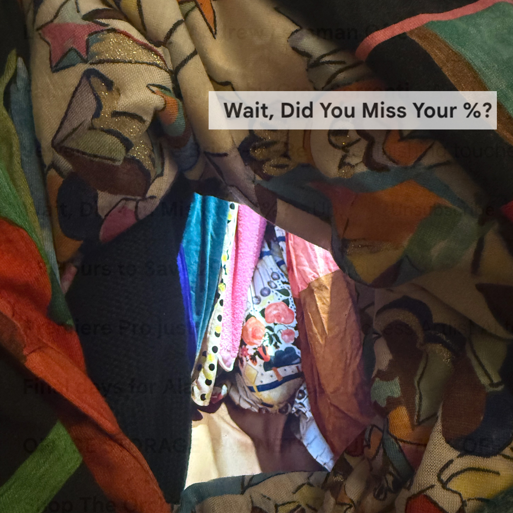
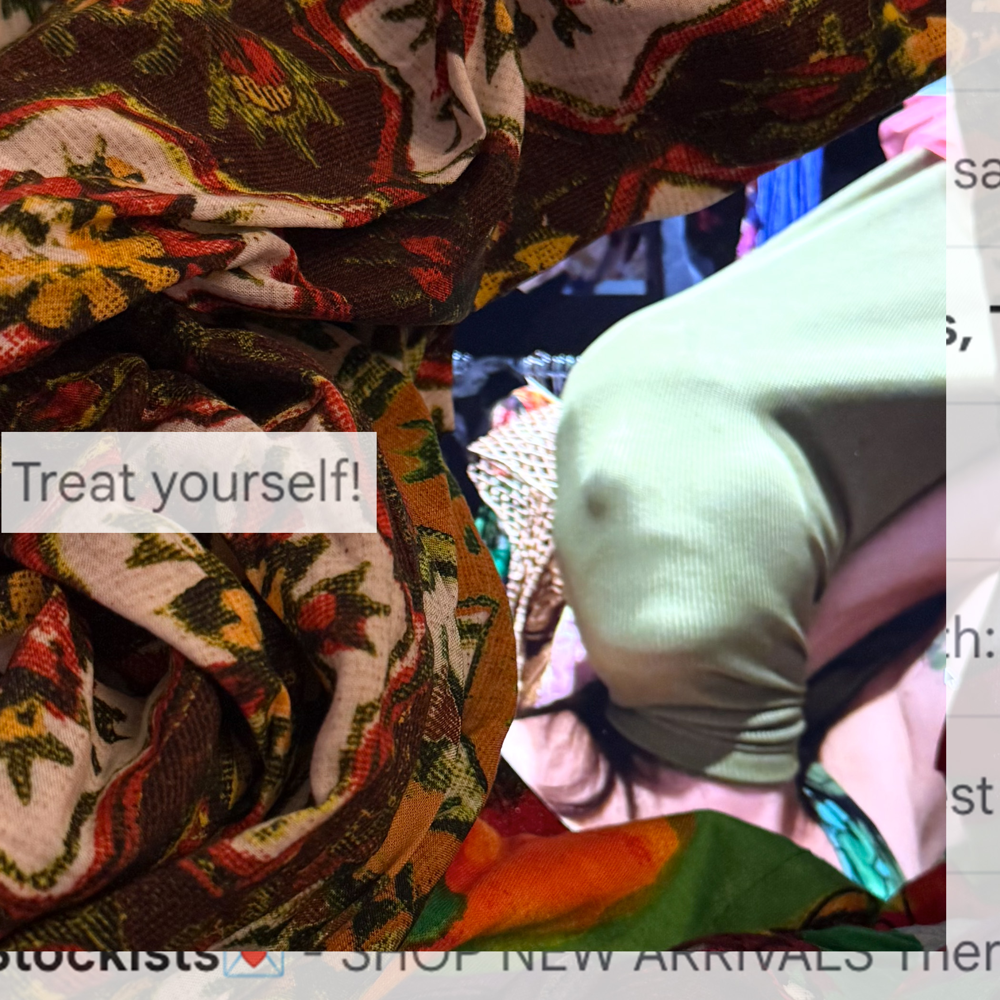
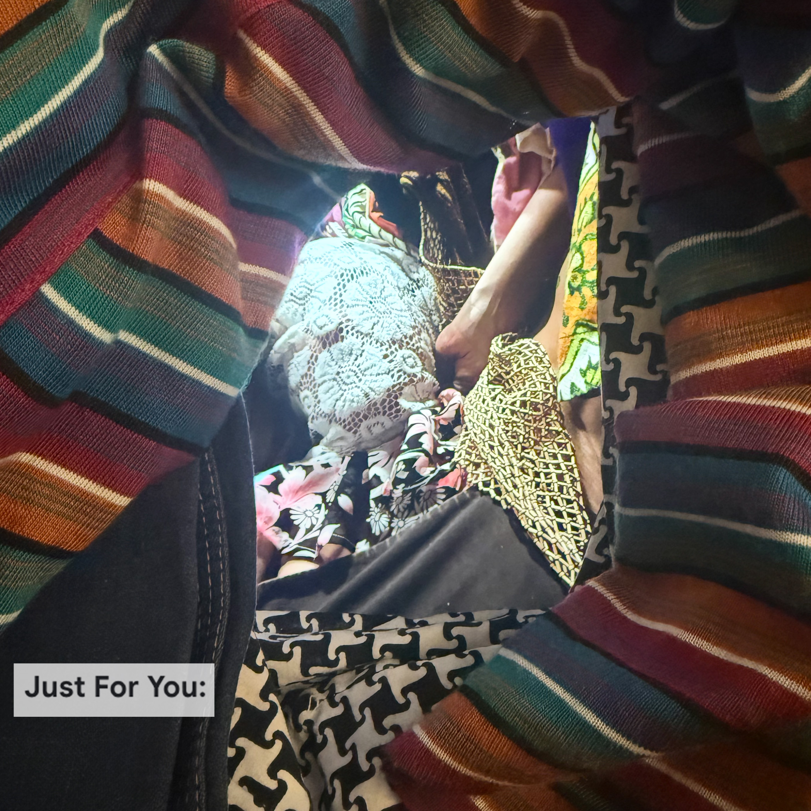
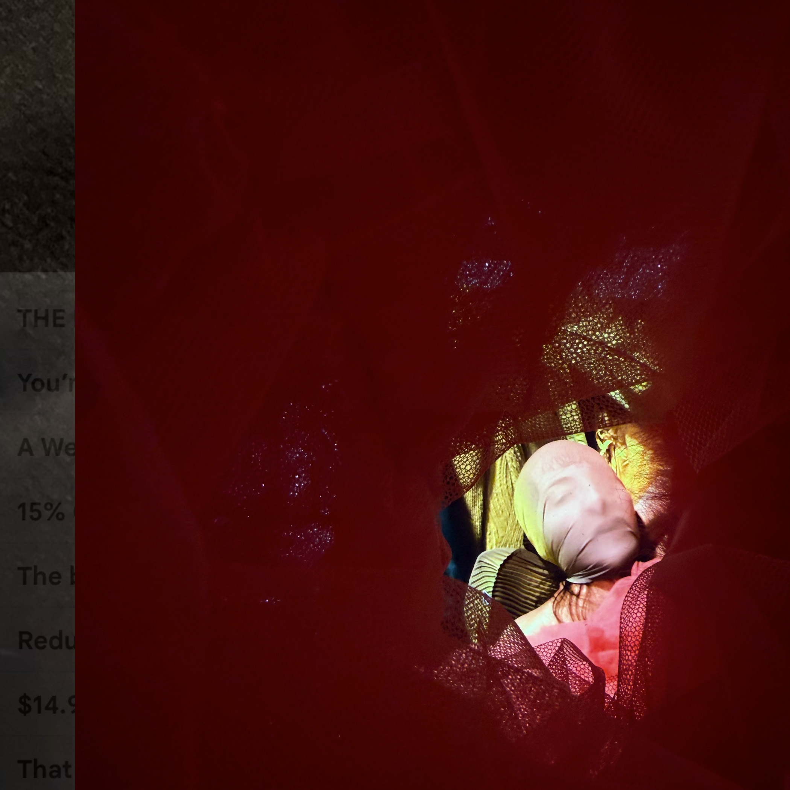
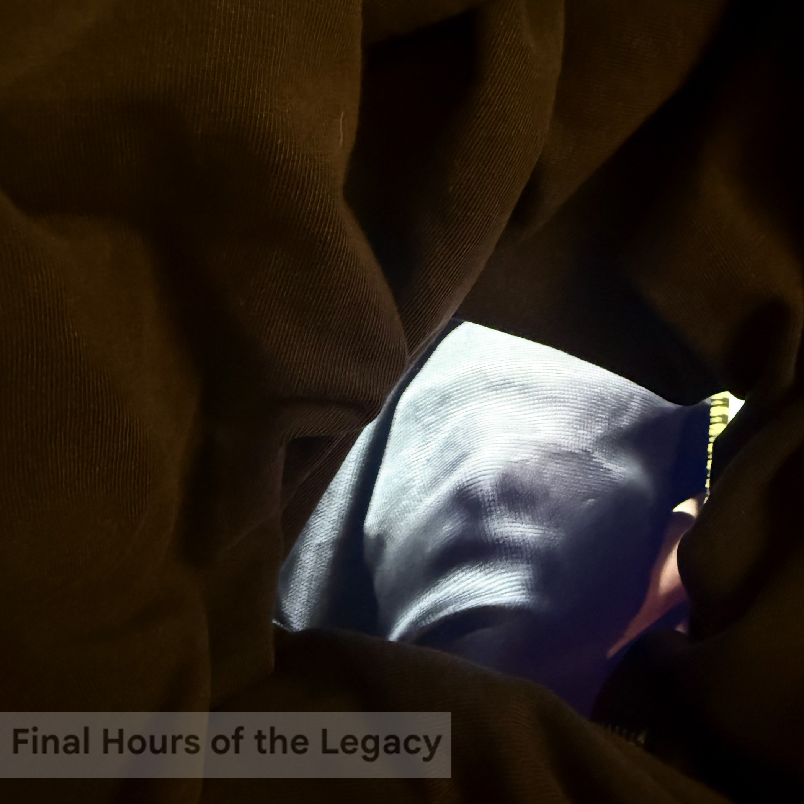
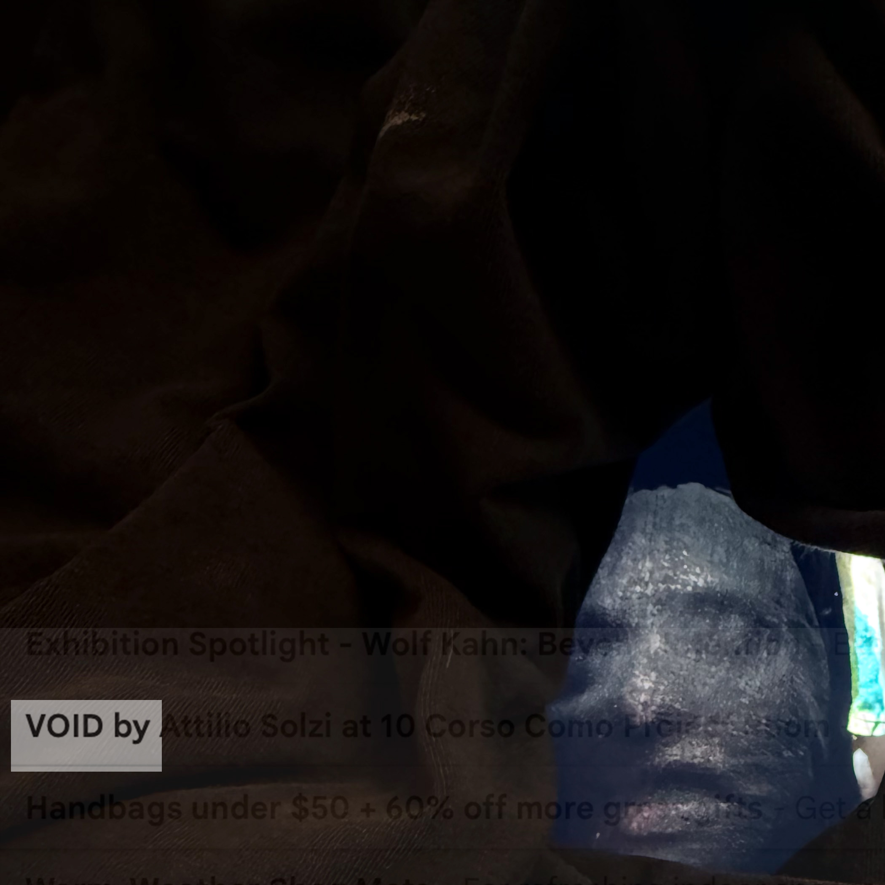

Thinking about the word incantation and the idea that repetitive action can invoke change, I wanted to meditate on an area where I feel empowered to make a personal shift: overconsumption. For this exercise, I contemplated my own relationship to clothing while acknowledging the influence of capitalist consumer culture. Overconsumption has both personal and collective consequences, contributing to environmental destruction that disproportionately affects communities along class lines. If I continue this project, I would like to explore these community and environmental impacts more deeply, focusing specifically on what is happening within a 60-mile radius of where I live.









